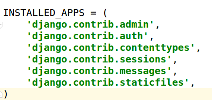
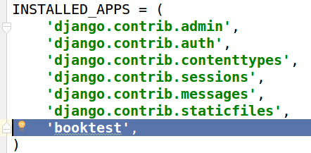
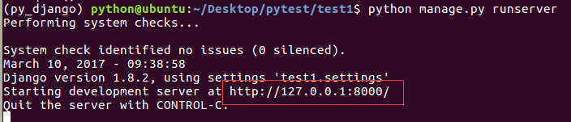
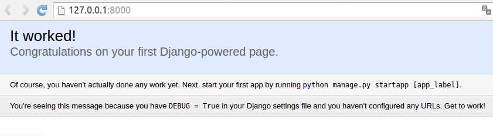

创建项目
我们以一个电商网站为例，网站上有跟用户有关的页面，有跟商品有关的页面，还有跟订单有关的页面，这样的一块内容其实就是网站的一个功能模块。
在django中，项目的组织结构为一个项目包含多个应用，一个应用对应一个业务模块。
示例
创建项目的名称为test1，完成"图书-英雄"信息的维护，创建应用名称为booktest。
创建项目
新建一个文件夹，用来存放我们的项目
创建项目的命令如下：
django-admin startproject 项目名称
例：
django-admin startproject test1
接下来可以使用IDE打开此目录，开发项目了，此处使用pycharm打开test1目录。
项目默认目录说明
- manage.py是项目管理文件，通过它管理项目。
- 与项目同名的目录，此处为test1。
- \_init.py__是一个空文件，作用是这个目录test1可以被当作包使用。
- settings.py是项目的整体配置文件。
- urls.py是项目的URL配置文件。
- wsgi.py是项目与WSGI兼容的Web服务器入口，详细内容会在布署中讲到。
创建应用
使用一个应用开发一个业务模块，此处创建应用名称为booktest，完成图书－英雄的信息维护。
创建应用的命令如下：
python manage.py startapp booktest
- __init.py__是一个空文件，表示当前目录booktest可以当作一个python包使用。
- tests.py文件用于开发测试用例，在实际开发中会有专门的测试人员，这个事情不需要我们来做。
- models.py文件跟数据库操作相关。
- views.py文件跟接收浏览器请求，进行处理，返回页面相关。
- admin.py文件跟网站的后台管理相关。
- migrations文件夹之后给大家介绍。
安装应用
应用创建成功后，需要安装才可以使用，也就是建立应用和项目之间的关联，在test1/settings.py中INSTALLED_APPS下添加应用的名称就可以完成安装。
初始项目的INSTALLED_APPS如下图：

接下来在元组中添加一个新的项，当前示例为booktest
'booktest',

开发服务器
在开发阶段，为了能够快速预览到开发的效果，django提供了一个纯python编写的轻量级web服务器，仅在开发阶段使用。
运行服务器命令如下：
python manage.py runserver ip:端口
例：
python manage.py runserver
可以不写IP和端口，默认IP是127.0.0.1，默认端口为8000。
服务器成功启动后如下图：

紧接着在浏览器中输入网址“127.0.0.1:8000”，或者按着ctrl键点击上图中标示出来的地址，可以查看当前站点开发效果。
如果增加、修改、删除文件，服务器会自动重启; 按ctrl+c停止服务器。
